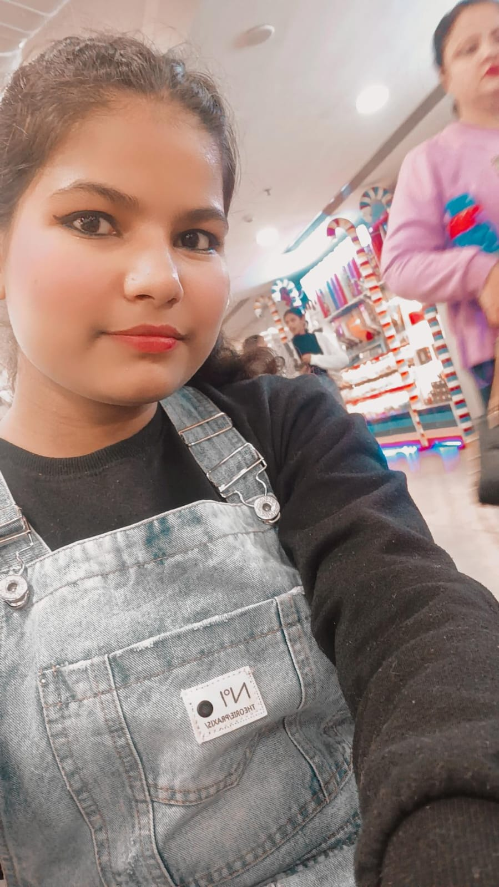

Software Developer
Here is an image from my work:
Hi, I'm Kareena, a passionate and aspiring web developer currently studying at Navgurukul, Delhi, pursuing Advance diploma in Software programming. My journey into the world of web development began with a strong curiosity and a desire to explore the endless possibilities of the digital world. Over the past months, I've dedicated myself to learning and mastering essential web technologies. I have a solid foundation in HTML, CSS, JavaScript , Python and Basic C , and I've had the opportunity to apply my skills by creating several projects. These projects, ranging from Registration page , Home project , Movify project , Calculator, have not only allowed me to put my knowledge into practice but have also provided valuable hands-on experience in problem-solving and creative thinking. My time at Navgurukul has been transformative. The supportive learning environment, combined with a focus on real-world skills, has empowered me to grow as a developer and a learner. I'm excited to continue my education and broaden my skill set as I work towards my BCom degree. Beyond the digital realm, I have a passion for Reading Psychology facts and Travelling. I believe that a well-rounded perspective is essential for innovation and creativity. As a newcomer to the tech world, I'm eager to embark on a career in web development, collaborate on exciting projects, and contribute to the ever-evolving landscape of technology. If you have an opportunity, project, or just want to connect and share experiences, please don't hesitate to reach out. I'm always open to new challenges and eager to learn. Thank you for taking the time to learn a little bit about me. Let's explore the digital world together!
Certificate in English Spoken Course from Words Worth
Certificate in English speaking from Cambridge
Certificate in Professional development from Anudip Foundation
Certificate in Cloud Fundamental from Anudip Foundation
Certificate in workplace IT from Anudip Foundation